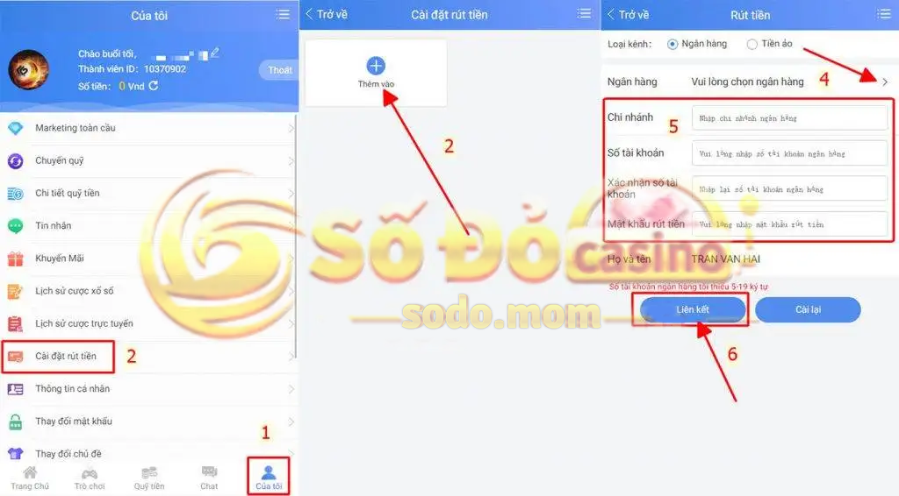

Hướng dẫn đăng ký SODO chỉ với 3 bước thao tác dành cho những thành viên tham gia cá cược trực tuyến tại nhà cái Số Đỏ. SODO sẽ hướng dẫn chi tiết các bước đăng ký tài khoản trên máy tính và thiết bị di động cùng các lưu ý nên thực hiện ngay từ những bước đầu tiên.
NHỮNG QUY ĐỊNH CẦN BIẾT TRƯỚC KHI ĐĂNG KÝ TÀI KHOẢN SODO
Trước khi tiến hành đăng ký tài khoản tại nhà cái Số Đỏ, bạn cần đọc qua các quy định về tài khoản thành viên trực thuộc nhà cái. Chúng tôi sẽ tóm tắt những điểm quan trọng mà bạn không nên vi phạm:
Quy định về tài khoản: Mỗi thành viên chỉ đăng ký một tài khoản, một số điện thoại, địa chỉ Ip, điện thoại di động,… Tài khoản đăng ký một lần duy nhất và sử dụng trên cả hai nền tảng máy tính và điện thoại di động.
Nhà cái Số Đỏ có quyền quyết định chấm dứt tài khoản thành viên nếu phát hiện thành viên vi phạm chính sách của nhà cái.
Người chơi điền thông tin đăng ký, có thể lựa chọn nhập mã đại lý hoặc không. Các chương trình khuyến mãi đều được nhận như nhau.
Sau khi tìm hiểu kỹ các lưu ý cần biết thì dưới dây chúng tôi sẽ hướng dẫn bạn thao tác đăng ký tài khoản SODO trên 2 phiên bản di động và máy tính.
HƯỚNG DẪN ĐĂNG KÝ SODO TRÊN ĐIỆN THOẠI DI ĐỘNG
Bước 1: Truy cập vào trang chủ nhà cái Số Đỏ
Để đăng ký tài khoản SODO, bạn có thể truy cập vào link được đặt bên dưới đây hoặc bấm vào nút Đăng ký ở đầu trang của chúng tôi:
Bước 2: Thao tác đăng ký tài khoản
Sau khi vào trang chủ nhà cái Số Đỏ thành công thì bạn chọn nút “Đăng ký” ngay bên góc phải ở trên màn hình điện thoại.
Một giao diện mới xuất hiện với yên cầu điền các thông tin cá nhân để đăng ký tài khoản:
Tên đăng nhập: Sử dụng 6 – 15 kí tự gồm chữ cái và số. Lưu ý không sử dụng dấu cách, tên phải được ghi liền nhau.
Mật khẩu: Mật khẩu sử dụng 6-20 kí tự. Mật khẩu dễ nhớ và không tiết lộ với bất kỳ ai.
Xác nhận mật khẩu: Điền lại nội dung mật khẩu ở trên. Lưu ý nhà cái không hỗ trợ copy và past trong mục này.
Họ và tên: tên thật và khớp với tên ngân hàng.
Số điện thoại: nhập số điện thoại đang sử dụng của bạn. Đặc biệt số điện thoại đăng ký sử dụng Zalo và Telegram.
Trước khi vào nút “Đăng ký” cuối cùng, bạn nên kiểm tra các thông tin một lần cuối để tranh tình trạng điền sai thông tin. Một giao diện trang chủ chào mừng khi tài khoản bạn đăng ký được nhà cái xác nhận thành công.
Chúng ta tiếp tục với bước thay đổi mật khẩu rút tiền và liên kết ngân hàng để hoàn tất việc đăng ký, tạo nhiều cơ hội nhận ưu đãi khi trở thành hội viên SODO chính thức.
Bước 3: Thay đổi mật khẩu rút tiền và liên kết ngân hàng tại nhà cái SODO
Mật khẩu rút tiền là chìa khóa bảo mật cấp 2 giúp phòng tránh việc người khác sử dụng tại khoản của bạn vì bất kỳ lý do gì thì cũng không thể rút tiền từ tài khoản SODO của bạn được. Do đó, chúng tôi cảnh báo bạn tuyệt đối không nên đưa tất cả những thông tin liên quan đến “mật khẩu” cho người khác.
Trường hợp bạn là người dễ quên thì phải làm sao? Nhà cái SODO chúng tôi không bắt buộc bạn thay đổi mật khẩu rút tiền, bạn có thể sử dụng mật khẩu mặt định là mật khẩu đăng nhập của chúng tôi. Tuy nhiên, trường hợp vấn đề rút tiền không chính chủ xảy ra thì trách nhiệm cuối cùng sẽ không thuộc về nhà cái.
Do đó, để tăng tính bảo mật và an toàn cho tài khoản SODO của bạn thì chúng tôi khuyên nên thiết lập mật khẩu cấp 2 này.
Các bước thay đổi mật khẩu rút tiền như bên dưới:
Bước 1: Đăng nhập tài khoản SODO vừa mới đăng ký thành công.
Bước 2: Tại giao diện trang chủ, bạn vào mục “của tôi” và chọn Cài đặt rút tiền”
Bước 3: Một thông báo sẽ xuất hiện với nội dung “Bạn chưa cập nhật mật khẩu rút tiền” và chọn “Đi thiết lập”
Bước 4: Chọn lại 4 số mật khẩu theo mỗi cá nhân bạn.
Sau khi hoàn thành thay đổi mật khẩu rút tiền, bạn đừng vội thoát khỏi mà thực hiện liên kết ngân hàng ngay tại mục “Cài đặt rút tiền”. Các bước liên kết ngân hàng sẽ được thực hiện như sau:
Bước 1: Chọn “Thêm vào” để mở cửa sổ mới với các thông tin yêu cầu điền ngân hàng của bạn.
Bước 2: Chọn ngân hàng mà bạn đang đăng nhập internet banking hoặc mobile banking. Lưu ý: không chọn thẻ tín dụng.
Bước 3: Điền các thông tin ngân hàng cần thiết như: chi nhánh, số tài khoản, mật khẩu rút tiền (vừa đặt ở trên).
Bước 4: Kiểm tra thông đã điền trước khi chọn nút “Liên kết”

Quá trình đăng ký tài khoản SODO kết thúc tại thao tác này. Không giống những nhà cái khác, bạn được liên kết nhiều ngân hàng thì tại SODO bạn chỉ tự liên kết 1 ngân hàng khi đăng ký tài khoản. Mọi thay đổi về tài khoản hoặc liên kết tài khoản thứ 2 đều phải liên hệ trực tiếp với bộ phận chăm sóc khách hàng trực tuyến để hỗ trợ.
CÁC BƯỚC ĐĂNG KÝ TÀI KHOẢN SODO TRÊN MÁY TÍNH, LAPTOP
Các bước đăng ký SODO trên giao diện máy tính/laptop tương tự như với giao diện điện thoại. Hiển thị máy tính sẽ to, rõ và tự do thao tác hơn so với phiên bản thiết bị di động. Hướng dẫn đăng ký tài khoản SODO bên dưới dành cho những bạn nào chuyên dùng máy tính tham gia cá cược điện thoại.
Bước 1: Truy cập vào vào trang chủ nhà cái Số Đỏ
Bạn hãy truy cập vào link chúng tôi đã cập nhật dưới đây để bắt đầu đăng ký tài khoản phiên bản máy tính:
Bước 2: Điền thông tin đăng ký tài khoản
Giao diện mới nhất của SODO được thiết kế đăng ký và đăng nhập cùng 1 nút và được đặt ở góc bên phải phía trên màn hình. Một giao diện mới bao gồm các nội dung cần điền sẽ được mở ra sau khi bạn chọn nút “đăng ký”.
Các thông tin cần điền không khác so với giao diện điện thoại. Sau khi kiểm tra tính chính xác của thông tin thì chọn xác nhận để hoàn thành đăng ký.
Tài khoản đăng ký thành công sẽ thể hiện tên tài khoản của bạn ở trên thanh thông báo để bạn bắt đầu tham gia cá cược tại nhà cái Số Đỏ.
Lưu ý: Mã xác nhận sẽ thay đổi thường xuyên nếu bạn thao tác sai hay muốn điền lại thông tin. Do đó, điền mã xác nhận xuất hiện trong lúc thao tác và không được sử dụng lại mã xác nhận cũ.
Bước 3: Thay đổi mật khẩu rút tiền và liên kết ngân hàng
Hiển thị mục thay đổi mật khẩu và liên kết ngân hàng trên giao diện máy tính khác với điện thoại. Do đó, bạn theo dõi các bước hướng dẫn bên dưới để thông tin đúng đến nhà cái nhé:
Bước 1: Truy cập trang chủ bằng tài khoản SODO mới đăng ký.
Bước 2: Chọn “Thông tin cá nhân” trên thanh menu tại trang chủ nhà cái SODO
Bước 3: Chọn “Rút tiền”, chọn mục “thông tin thêm”
Bước 4: Chọn 4 số làm mật khẩu rút tiền. Lưu ý không tiết lộ mật khẩu cho bất kỳ ai.
Sau khi hoàn thành thay đổi mật khẩu rút tiền, website sẽ tự động chuyển bạn sang mục “thay đổi thử ngân hàng”. Tại đây, bạn bấm vào phần “thêm thẻ ngân hàng” và bắt đầu điền các thông tin bên dưới:
Tên chủ thẻ: Họ và tên thật được ghi trên thẻ ngân hàng của bạn. Lưu ý họ và tên đăng ký và ngân hàng trùng nhau.
Chọn ngân hàng: Trong mục này có mũi tên liệt kê sẵn tất cả các ngân hàng hiện có tại Việt Nam. Lướt chọn tên ngân hàng mà bạn sở hữu
Số tài khoản: Điền đúng số tài khoản ngân hàng. Chú ý số tài khoản chứ không phải số thẻ ghi trên thẻ ngân hàng của bạn.
Chi nhánh: Điền chi nhánh thẻ ngân hàng mà bạn sở hữu
Mật khẩu rút tiền: mật khẩu 4 số đã được đặt ở trên.
Kiểm tra lại thông tin điền trước ghi nhấn nút gửi và hoàn tất quy trình đăng ký SODO.
Với những bước hướng dẫn đăng ký tài khoản SODO cực kỳ đơn giản và nhanh chóng bạn đã tạo xong một tài khoản an toàn, bảo mật để chơi cá cược trực tuyến tại nhà cái Số Đỏ rồi. Việc cần làm tiếp theo là nạp tiền và nhận khuyến mãi trải nghiệm ngay các trò chơi siêu hấp dẫn của SODO. Chúc các bạn may mắn!
Xem thêm Hướng Dẫn Nạp Tiền SODO tại đây.